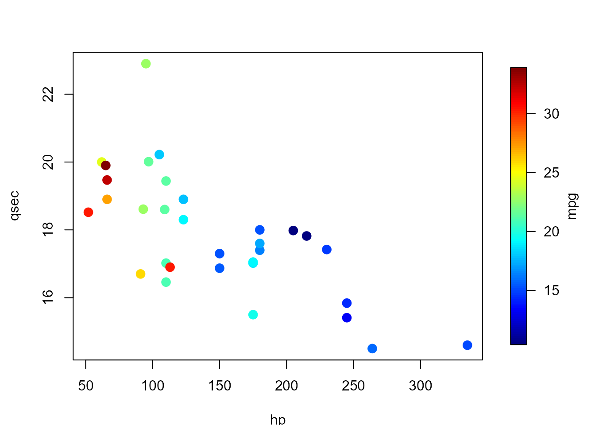

Restores the graphical parameters changed by splot()/fplot() (or by
sxxx()/fxxx() functions with reset = FALSE) or those previously set
as the default ones.
Arguments
- default
logical; if
FALSE(default) restores the parameters saved automatically by the last call tosplot()orfplot(). IfTRUE, restores the default parameters (those in effect before the first call tosplot()/fplot()or set withpar.reset(set = TRUE)).- set
logical; if
TRUE, saves the current graphical parameters as the new defaults (the graphical parameters are not changed).
Value
Invisibly returns the graphical parameters as they were before
restoring/saving (see par()).
Examples
scale.range <- range(mtcars$mpg)
splot(slim = scale.range, legend.lab = "mpg")
with(mtcars,
plot(hp, qsec, col = scolor(mpg, slim = scale.range),
pch = 16, cex = 1.5)
)

par.reset() # restores parameters from the last splot()/fplot() call
# Set current parameters as the new default
par.reset(set = TRUE)
# ... later, after several splot()/fplot() calls ...
par.reset(default = TRUE) # restores those that were set as defaults